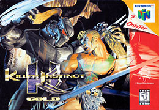
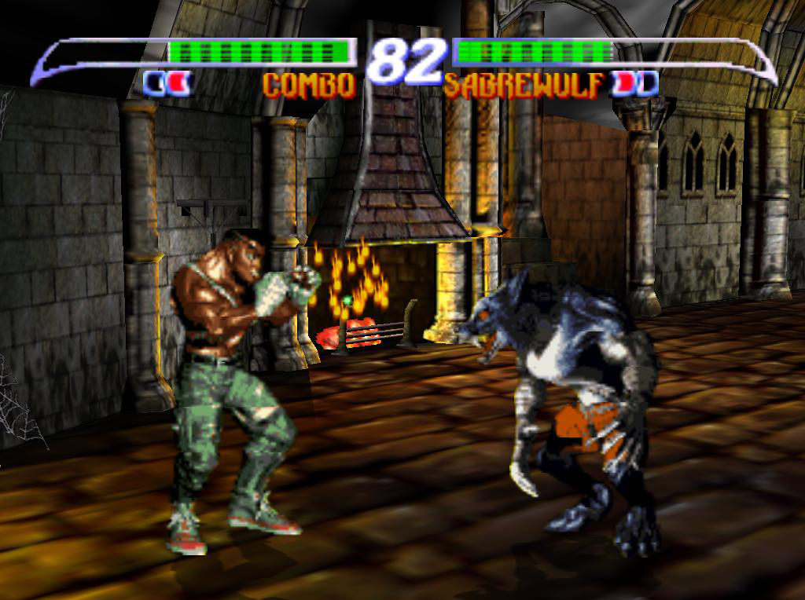
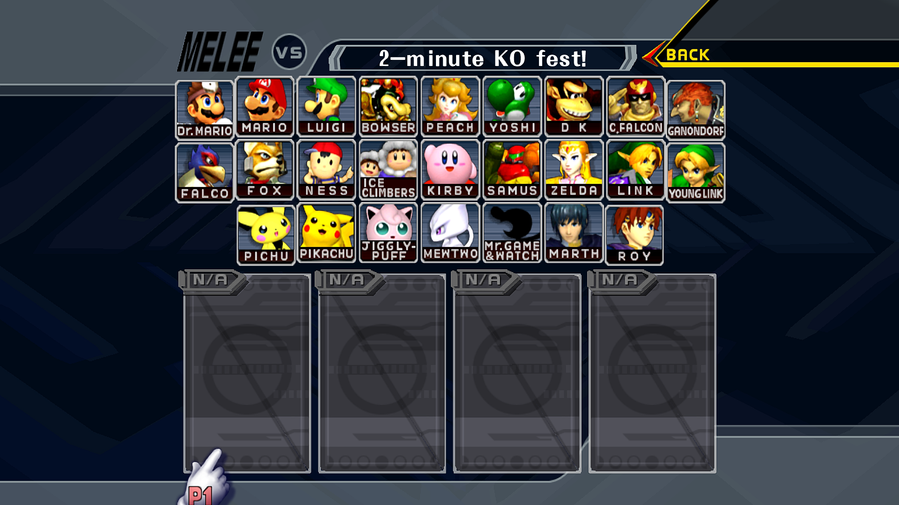
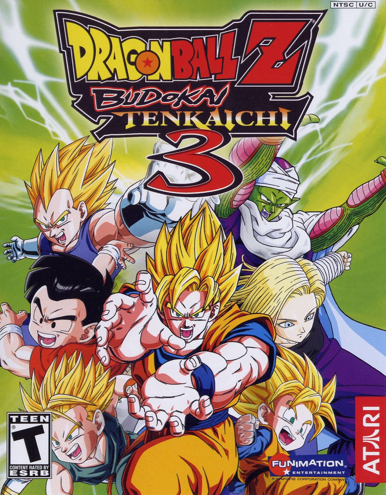

Jogos de luta (Parte 1) - 19/08/2024
Até recentemente eu nunca tinha me dado conta - mas eu sempre joguei jogos de luta
A questão é que sempre fui casual, nunca peguei um jogo de luta pra treinar. Nunca tive muita paciência pra isso
Fora que treinar contra robôs não é legal. Mas hoje em dia, com Rollback Netcode, é tão fácil lutar contra outras pessoas
Eu queria ter tido a experiência de ir num arcade e lutar contra estranhos
A ideia é tão interessante - se você ganha, você fica com a ficha
A maior parte das pessoas vão ser casuais, mas de vez em quando você vai encontrar alguém que vai te encher de porrada no jogo, te mostrando coisas que você nem sabia que eram possíveis
Pelo menos é assim que meu pai descreve essa época, e já vi outros relatos também. O Sakurai, criador do Smash, disse que ele já chegou a ganhar +50 partidas seguidas em um arcade, algo que, francamente, é praticamente impossível se você não estiver usando uma conta smurf hoje em dia
Mas na época não tinha smurf, não tinha move list, não tinha tutorial. Eu acho muito louco que sequer dava certo
Infelizmente nasci tarde demais pra isso
A seguir está minha curta reflexão sobre todos os jogos de luta que já joguei, mais ou menos em ordem cronológica
Super Smash Bros. (64)
Meu primeiro jogo de luta provavelmente foi o Super Smash Bros 64. Lembro de jogar em emuladores no computador quando era bem pequeno, isso deve ser 2005 ou 2006
Eu até tinha o Nintendo 64, mas não esse jogo. Mas como eu tinha o Ocarina of Time, eu jogava de Link. Lembro de fazer o modo arcade mesmo, lutar contra o Master Hand, fazer os desafios
Foi ali que conheci o Captain Falcon/F-Zero, Ness/Earthboud. Meu pai conhecia todas essas franquias e me falava sobre.
Nunca me interessei muito pelo Earthbound, mas joguei um pouco do F-Zero do SNES, e depois do 64. Os dois bem divertidos, mas sempre preferi Wipeout
Eu sei que esse jogo tá longe de ser tão mecanicamente bem feito quantos os outros Smash, mas até hoje ele é um dos meus favoritos
Infelizmente eu tenho poucas memórias daquela época com ele, visto que eu era muito pequeno, mas definitivamente me lembro de jogar bastante
Bônus.
Killer Instinct Gold
Provavelmente o próximo jogo que joguei foi o Killer Instinct do Nintendo 64. Esse eu tinha original no 64. Lembro de tentar jogar algumas vezes, mas eu absolutamente não conseguia jogar bem
Sinceramente, eu tenho vagas memórias de tentar jogar algumas vezes só. Eu tinha poucos jogos, então de tempos em tempos acabava tentando novamente, mas aí levava uma surra e desistia. Só me lembro de jogar com o lobisomem
Eu cheguei a jogar o "novo", Killer Instinct de 2013. Eu reconheci o carinha de fogo e o de gelo nas suas skins clássicas, me deu um pouco de nostalgia, mas achei o jogo muito esquisito de jogar.


Super Smash Bros. Melee
Eu nunca tive um GameCube, e naquela época eu nem sei se era possível emular - se era, o computador que a gente tinha lá em casa certamente não daria conta
Mas meu tio Victor Hugo tinha, e por algum motivo ele me emprestou o GameCube dele por umas duas semanas
Como meu tempo era limitado, eu fiquei absolutamente internado nesse videogame, jogando principalmente Pokémon Colosseum e Melee
Novamente, eu quera bem pequeno e tenho poucas memórias, especialmente por ter sido um período tão curto de tempo. Mas eu me lembro que adorava jogar com o Mewtwo, eu já gostava dele como Pokémon, ter ele ali no smash como um personagem novo era sensacional
Ele podia se TELETRANSPORTAR! O pequeno Vini achava incrível demais
E meu estágio favorito era o Pokémon Stadium. Até hoje eu gosto muito do Melee, mas tenho zero interesse em jogar ele competitivamente. Até posso ter mais paciência hoje, não o suficiente pra aprender todas as técnias desse jogo (e o jogo nem sequer tem buffer 💀)


Esse não foi o Smash da minha infância, mas foi uma ótima experiência de qualquer forma. Me pergunto se teria sido diferente caso eu realmente tivesse um GameCube e pudesse continuar jogando
Budokai Tenkaishi 3
De longe, o jogo de luta que mais joguei na minha infância. Lembro de jogar muito com meu pai e meu padrinho no PS2
Foi o primeiro jogo de luta que eu fiquei "descente". É difícil saber o quão bom eu era - mas visto que eu devia ter uns 8 anos, não devia ser nada de mais
Mas eu sei que zerei o modo campanha, e como lutava muito contra outros humanos, eu fui ficando cada vez melhor com o Kid Boo, meu main
Ali que conheci a história do Dragon Ball Z. Eu nunca tinha assistido o anime, então meu padrinho ia me explicando conforme a gente avançava na história
Acabei conhecendo todas as sagas, e até hoje gosto muito de dragon ball (mas ainda tenho que terminar de assistir o Super)


Andei jogando novamente a campanha esses dias com meu amigo Léo - é bem mais fácil do que eu me lembrava 😅 Talvez eu não fosse tão bom...
Mas de qualquer forma, é impressionante como esse jogo se sustenta até hoje
Eu cheguei a jogar outros Dragon Ball de luta, incluindo o Raging Blast do PS3, o Xenoverse 1 e 2 - mas sinceramente, nenhum chegou no nível do Budokai 3.
Mesmo assim, tenho boas memórias jogando o Raging Blast com meu amigo Enzo em Itajaí, e o Xenoverse 2, uma vez aluguei com meu amigo João e jogamos ao longo do final de semana. Também foi uma experiência memóravel
Agora, depois de 17 anos, finalmente está pra sair o Budokai Tenkaishi 4. Faltam apenas alguns meses
Mal posso esperar, quero jogar online e treinar, ficar bom 😄 Quem sabe faço um post sobre ele no futuro
Parte 2